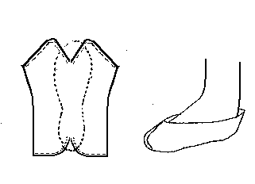

Wedelspang Bog Slipper (c700-1000)
A center seam slipper from the Wedelspang Bog find (K.S. 12215).
Once you have stitched the part under the toe and heel, pound the seams flat. Then tack the center seam and then tack the seam on the foot, to try to form it to the foot before sewing the seam.
This design is based on a description found in
Hald
Return to
[Index] or
[Next]
Footwear of the Middle Ages - Historical Shoe Designs/Number 10, by I. Marc Carlson. Copyright 1996
This page is given for the free exchange of information, provided the Author's Name is included in all future revisions, and no money change hands, other than as expressed in the Copyright Page.